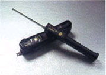
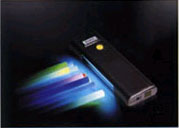
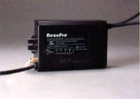
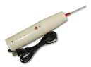

Neon Testing Tools
Neon Testing Tools

Neon Tube Tester- Convenient testing tool for trouble shooting.
- "Torch" shape design with body-fitting leather mini-case, perfect for carrying.
- Safe on button design with accidental turn-on protection;
- Use only 4AA battery.

Fluorescent Powder Color Detector- Useful testing tool for detecting the color of fluorescent powder tubing;
- Safe and reliable;
- Mini portable design;
- Safe on button design with accidental turn -on protection;
- Use only 4AA batteries.

Load Length Meter- Designed for calculating the total voltage of neon tubes in a circuit, assists in the decision of selecting the correct rating of neon transformer for the circuit/sign;
- Easy to use;
- With color LED indicators, clearly indicating shows the test result;
- With build-in over voltage protection circuit.

Spark coil for detecting leaks- 110 or 230 Volt high-frequency generator used for detecting leaks in a pumping system.
Neon Testing Tools